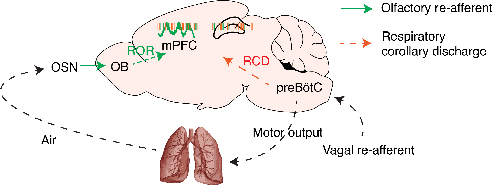

Breathing coordinates cortico-hippocampal dynamics in mice during offline states
Nature Communications, 2022In the latest and most significant of my research works so far, I investigated the origins of slow prefrontal oscillations during quiescence and sleep. Although most known neural oscillations are generated by intracerebral circuits, in this work, I focused my attention on breathing, the most fundamental and ubiquitous rhythmic activity in life. Using large-scale, multi-region silicon probe recordings in mice, I identified and characterized the entrainment by breathing of network dynamics across the limbic system, including the prefrontal cortex, hippocampus, thalamus.

I established the role of respiratory entrainment in organizing network dynamics in the wake and sleep state, giving rise to global synchronization, effectively providing the substrate for coherent systems memory consolidation across distributed brain structures. I further identified a novel circuit mechanism underlying the respiratory entrainment of the limbic circuits in the form of an intracerebral copy of breathing that synchronizes the oscillatory activity between regions.
This work paves the way for an update and re-interpretation of the mechanisms believed to underlie memory consolidation in thalamocortical and limbic networks and demonstrates how physiological changes in the periphery directly modulate the central nervous system function.
Prefrontal 4-Hz oscillations during fear behavior
Nature Neuroscience, 2016We identified a novel internally-generated brain state, characterized by 4-Hz oscillations in the prefrontal cortex of mice during fear behavior. (Nature Neuroscience, 2016)
In this work, we studied the mechanisms allowing the long-range network synchronization of neuronal activity between the medial prefrontal cortex (mPFC) and basolateral amygdala (BLA) during fear behavior. The mPFC regulates fear behavior via projections to the BLA, a region encoding associative fear memories.

Exploiting a combination of in vivo extracellular electrophysiological recordings and optogenetic manipulations, we investigated the oscillatory and temporal coding mechanisms mediating mPFC-BLA coupling during fear behavior. We found that freezing, a behavioral expression of fear, is tightly associated with an internally generated brain state that manifests in sustained 4Hz oscillatory dynamics in prefrontal-amygdala circuits. These oscillations synchronize prefrontal-amygdala circuits and entrain neuronal activity to dynamically regulate the development of neuronal ensembles, enabling the precise timing of information transfer between the two structures and the expression of fear responses.
Finally, we identified that optogenetic induction of prefrontal 4Hz oscillations promotes freezing behavior and the formation of long-lasting fear memory, suggesting a causal role of this dynamic entrainment between the two regions in the encoding and expression of fear memory.
Intercalated amygdala clusters orchestrate a switch in fear state
Nature, 2021In this work, we characterized the role of distinct inhibitory clusters of intercalated neurons (ITCs) in the mouse amygdala during the acquisition and retrieval of fear extinction memory. We established the antagonistic relationship between these clusters through mutual synaptic inhibition and their projections to distinct cortical- and midbrain- projecting amygdala output pathways. This balance between the clusters likely implements a regulatory mechanism that controls the switch between high- and low-fear states.
Prefrontal neuronal assemblies temporally control fear behaviour
Nature, 2016We identified a novel phase-specific coding mechanism, which dynamically regulates the development of prefrontal neuronal assemblies to control the precise timing of fear responses. (Nature, 2016)
In this work, we focused on the role of specific prefrontal neuronal ensembles for the expression of fear. Building upon our previous findings (Karalis et al., Nature Neuroscience, 2016) about the role of 4Hz oscillations in fear behavior, we hypothesized that the activity of prefrontal cells in the distinct phases of the oscillation encodes distinct information and is differentially involved in the expression of fear behavior. Using closed-loop, phase-resolved optogenetic manipulations, we identified that selective inhibition of prefrontal neurons during the distinct phases blocks and promotes conditioned fear responses, respectively.
These results identified a novel phase-specific coding mechanism, which dynamically regulates the development of prefrontal ensembles and controls the precise timing of fear responses.